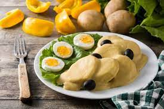

Papa a la Huancaina

Description
Fire dish on god! This plate will have you moving to Peru to find your future wife. Papa a la Huancaina is cheesy, spicy potatoe dish. It is a very light dish typically served as an appetizer
The dish originated during the 1870's during the time of railroad construction across Peru, served to laborers by the local woman. Over time this dish became very popular that many workers would wait for the Huncayan potatoe lady. Through this the Papa a la Huancaina traveled not across Peru but the world.
Ingredients
- 3 yellow potatoes
- 1 pound queso fresco
- 3 aji amarillo peppers
- 1 egg
- 3 cloves of garlic
- 3 salty crackers
- 2 spoons of milk
- salt
Steps
- Boil the potatoes and hard boil eggs
- If using peppers: clean the ribs, lightly fry them with garlic.
If using paste: skip this step and proceed to blend
- Blend peppers/paste, garlic, queso, crackers and milk. You can adjust the milk and crackers to achieve the desired thickness
- Slice the potatoes and put on a plate, then cover with blended sauce and sliced boiled egg
- Serve on its own or on lettuce leaves with a few black olives